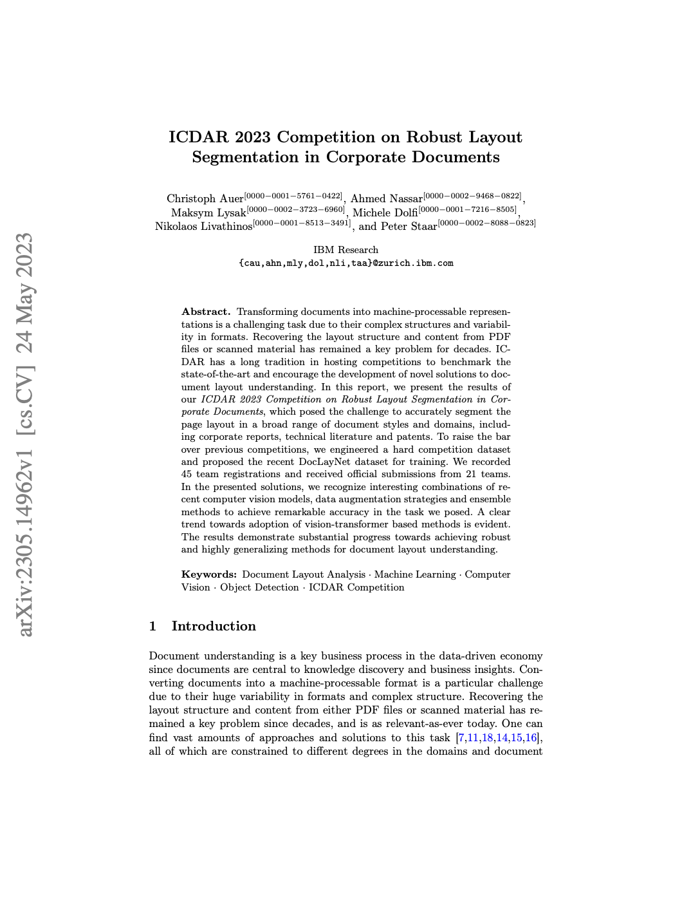
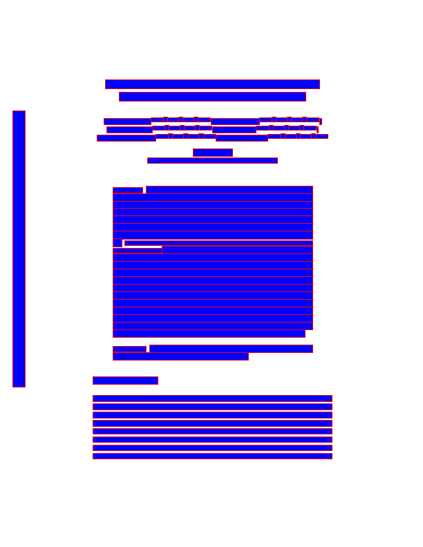

This blog post explores the current landscape of PDF parsing for use as input to Large Language Models (LLMs). Extracting meaningful information from PDFs can be challenging due to their complex structure. This article examines several approaches, their strengths, and limitations, with a focus on their suitability for LLM integration (markdown output).
We begin with a detailed presentation of some open-source PDF parsing libraries: Docling, Marker-PDF, and MinerU in Section 1. In particular, we provide a comprehensive overview of the Docling pipeline, a modular and open-source PDF processing pipeline designed to transform PDFs into a structured representation (the DoclingDocument) in Section 1.1. We also discuss Marker-PDF and MinerU in Section 1.2 and Section 1.3. The objective is to gain an understanding of how modern PDF parsing libraries function, in particular the role of deep learning models in PDF parsing and extraction, focusing on layout analysis, table structure recognition, and Optical Character Recognition (OCR).
Following this, we compare and evaluate various PDF parsing libraries and tools in Section 2, including open-source libraries (Docling, Marker, MinerU, PyMuPDF) and closed-source solutions (LlamaParse, Gemini). We provide a detailed comparison based on a qualitative analysis using a diverse set of test PDFs (slides, reports, scanned documents, and documents with complex tables). The results of this analysis are available through an interactive demo that visualizes the differences between PDF input and Markdown output for each parsing solution.
Detailed Presentations of PDF Parsing Libraries: Docling, Marker-pdf, MinerU
Docling: A Modular PDF Processing Pipeline
Overview
Docling is a modular and extensible pipeline designed to ingest various document formats, primarily PDFs (but also DOCX, HTML, etc.), and transform them into a unified, structured representation: the DoclingDocument. The core aim is to create a standardized representation suitable for downstream tasks, such as feeding data into an LLM. Docling is in active development and is completely open-source. It provides a comprehensive technical documentation (Auer et al. 2024), (Livathinos et al. 2025).
The Docling pipeline, as shown in Figure 1, consists of the following stages:
- PDF Backend (for raw PDF document processing)
- AI Models (Layout Analysis, Table Structure Recognition, OCR)
- Assembly and Post-processing
PDF Backend
The PDF backend is responsible for:
- Retrieving all text content and their geometric coordinates on each page.
- Rendering the visual representation of each page as it appears in a PDF viewer.
These capabilities are encapsulated in Docling’s PDF backend interface. Docling provides multiple backend choices, including a custom-built PDF parser based on the low-level qpdf library. This parser is open-sourced as a separate package, docling-parse, and powers Docling’s default PDF backend. Figure 2 illustrates the parsing process.


The docling-parse package provides a Python interface to extract text content, images, and annotations from PDFs. It also supports rendering PDF pages as images. The extracted content is serialized to JSON Listing 1, which can be further processed by downstream components.
{'annotations': [{'/A': {'/IsMap': False,
'/S': '/URI',
'/URI': 'https://www.deloitte.com/global/en/Industries/financial-services/perspectives/pushing-through-undercurrents.html'},
'/BS': {'/S': '/S', '/Type': '/Border', '/W': 0},
'/Border': [0, 0, 0],
'/H': '/N',
'/Rect': [474.409, 580.322, 512.947, 569.083],
'/Subtype': '/Link',
'/Type': '/Annot'},
{'/A': {'/IsMap': False,
'/S': '/URI',
'/URI': 'https://www.deloitte.com/global/en/Industries/financial-services/perspectives/pushing-through-undercurrents.html'},
'/BS': {'/S': '/S', '/Type': '/Border', '/W': 0},
'/Border': [0, 0, 0],
'/H': '/N',
'/Rect': [67.9417, 568.322, 286.919, 557.22],
'/Subtype': '/Link',
'/Type': '/Annot'}],
'original': {'cells': {'data': [[36.142,
711.041,
54.862,
739.753,
36.142,
711.041,
54.862,
711.041,
54.862,
739.753,
36.142,
739.753,
'P',
-1,
8.32,
'/WinAnsiEncoding',
'WINANSI',
'/TT0',
'/FSUTKX+OpenSans-Light',
False,
True],
[54.542,
711.041,
73.422,
739.753,
54.542,
711.041,
73.422,
711.041,
73.422,
739.753,
54.542,
739.753,
'u',
-1,AI Models
Docling integrates several AI models for layout analysis and table structure recognition (TableFormer (Nassar et al. 2022)). Pre-trained weights (hosted on Hugging Face) and a separate package for inference code (docling-ibm-models) are available.
Layout Analysis Model
This model detects and classifies various elements on a page image by predicting bounding boxes. The architecture is based on RT-DETR and retrained on DocLayNet (Pfitzmann et al. 2022) and proprietary datasets. The Docling pipeline uses page images at 72 dpi resolution. Bounding box proposals are post-processed to remove overlaps based on confidence and size and then intersected with text tokens to group them into meaningful units (e.g., paragraphs, section titles, tables).
RT-DETR (Real-Time DEtection TRansformer) is an object detection system using a hybrid encoder to process image features and IoU-aware query selection to focus on important parts of the image.
Table Structure Recognition
The TableFormer model (a vision transformer) recovers table structure Figure 3. It predicts the logical row and column structure of a table based on an input image, determining which cells belong to column headers, row headers, or the table body. TableFormer handles tables with partial or no borderlines, empty cells, row or column spans, and other complexities.
The Docling pipeline feeds table objects detected in the layout analysis to the TableFormer model. TableFormer structure predictions are matched back to the PDF cells to avoid re-transcription of text in the table image.
OCR (Optical Character Recognition)
Docling optionally supports OCR for scanned PDFs or content in embedded bitmaps. Docling supports multiple OCR engines such as EasyOCR, Tesseract, RapidOCR, and OcrMac. By default, Docling feeds a high-resolution page image (216 dpi) to the OCR engine to capture small print details.
Assembly and Post-processing
In the final stage, Docling assembles all prediction results into a DoclingDocument, defined in the docling-core package. This document object is then passed through a post-processing model that augments features, such as:
- Document language detection
- Reading order correction
- Matching figures with captions
- Labeling metadata (title, authors, references)
The final output can be serialized to JSON or transformed into Markdown.
Additional post-processing steps can include:
- Classification of figures.
- Identification of code blocks or formulas.
- Annotation of pictures with LLMs (example).
The DoclingDocument is a unified representation designed to encapsulate document structure and content in a standardized way. It’s a Pydantic datatype supporting text, tables, pictures, and more. It distinguishes between the main body and auxiliary elements (“furniture”). It retains layout information (bounding boxes) and provenance information. The DoclingDocument structure is organized into content items (texts, tables, pictures) and content structure (body, furniture, groups) Figure 4.
Marker-PDF: Accurate PDF Conversion
Marker-pdf pipeline is another interesting option for PDF parsing. Raw extraction is done by pdftext, which is based on pypdfium2. Then, it uses Surya Surya GitHub. Surya is a document OCR toolkit that performs:
- OCR in 90+ languages.
- Line-level text detection in any language.
- Layout analysis (table, image, header, etc. detection).
- Reading order detection.
- Table recognition (detecting rows/columns).
- LaTeX OCR.
The JSON output format from Surya is illustrated in Listing 2. This structured output includes detailed information about page dimensions, blocks of text, and individual spans with their corresponding bounding boxes, font information, and text content. Marker itself converts PDFs and images to markdown, JSON, and HTML. The key features of Marker include:
- Supports a range of documents in all languages.
- Formats tables, forms, equations, links, references, and code blocks.
- Extracts and saves images along with the markdown.
- Removes headers/footers/other artifacts.
- Easily extensible with custom formatting and logic.
- Optionally boosts accuracy with an LLM.
- Works on GPU, CPU, or MPS.
[
{
"page": 0,
"bbox": [
0,
0,
595.2760009765625,
841.8900146484375
],
"width": 596,
"height": 842,
"rotation": 0,
"blocks": [
{
"lines": [
{
"spans": [
{
"bbox": [
36.14179992675781,
99.6307373046875,
481.22967529296875,
131.6307373046875
],
"text": "Pushing through undercurrents",
"rotation": 0,
"font": {
"name": "OpenSans-Light",
"flags": 524320,
"size": 1,
"weight": 240
},
"char_start_idx": 0,
"char_end_idx": 28,
"url": ""
},
{
"bbox": [
466.78369140625,
125.09466552734375,
466.78369140625,
125.09466552734375
],
"text": "\n",
"rotation": 0,
"font": {
"name": "",
"flags": 0,
"size": 1,
"weight": -1
},
"char_start_idx": 29,
"char_end_idx": 30,
"url": ""
}
],
"bbox": [
36.14179992675781,
99.6307373046875,
481.22967529296875,
131.6307373046875
]
}
],
...MinerU: Multi-Module Document Parsing
MinerU is a multi-module document parsing framework that uses a multi-stage approach, employing various document parsing models to process document images. The code repository is available at the MinerU GitHub Repository, and technical details can be found in the reference paper (Wang et al. 2024). MinerU provides source code, models, and documentation for parsing various document formats efficiently.
The MinerU framework processing workflow (Figure 5) consists of four stages:
- Document Preprocessing: Uses PyMuPDF to read PDF files, filters out unprocessable files, and extracts PDF metadata (parseability, language type, page dimensions).
- Document Content Parsing: Employs the PDF-Extract-Kit library for layout analysis (layout and formula detection). Applies different recognizers to various regions: OCR for text and titles, formula recognition for formulas, and table recognition for tables.
- Document Content Post-Processing: Removes invalid regions, stitches content according to regional positioning, and obtains positioning, content, and sorting information for different document regions.
- Format Conversion: Generates user-required formats, such as Markdown, for subsequent use.
Document Preprocessing
This stage focuses on filtering unprocessable PDFs and obtaining PDF metadata:
- Language Identification: Currently processes Chinese and English documents.
- Content Garbled Detection: Identifies text-based PDFs with garbled text.
- Scanned PDF Identification: Distinguishes between text-based and scanned PDFs.
- Page Metadata Extraction: Extracts document metadata such as total page count, page dimensions, and other attributes.
Document Content Parsing
MinerU uses the PDF-Extract-Kit model library to detect different types of regions and recognize their content:
- Layout Analysis: Identifies different types of elements and their regions on a page.
- Formula Detection: Detects inline and displayed formulas.
- Formula Recognition: Recognizes formula images into LaTeX source code using the UniMERNet model.
- Table Recognition: Extracts tabular data from visual table images using TableMaster and StructEqTable.
- OCR: Applies Paddle-OCR to recognize text regions.
Document Content Post-Processing
This stage addresses content ordering by handling the relationships between Bounding Boxes (BBoxes):
- Containment Relationships: Removes formulas and text blocks contained within image and table regions.
- Partial Overlap Relationships: Shrinks partially overlapping text boxes and ensures the integrity of text when overlapping with tables/images.
- Segmentation Algorithm: Divides the page into regions based on human reading order (“top to bottom, left to right”).
Models Overview
| Task Type | Description | Models |
|---|---|---|
| Layout Detection | Locate different elements in a document: including images, tables, text, titles, formulas | DocLayout-YOLO_ft, YOLO-v10_ft, LayoutLMv3_ft |
| Formula Detection | Locate formulas in documents: including inline and block formulas | YOLOv8_ft |
| Formula Recognition | Recognize formula images into LaTeX source code | UniMERNet |
| OCR | Extract text content from images (including location and recognition) | PaddleOCR |
| Table Recognition | Recognize table images into corresponding source code (LaTeX/HTML/Markdown) | PaddleOCR+TableMaster, StructEqTable |
Comparing PDF Parsing Libraries
Comparing PDF parsing libraries involves evaluating several factors: ease of use, functionality, performance. This section aims to provide an overview of the comparative performance of the parsing options in the context of different PDF types.
This analysis provides a practical comparison of several PDF parsing libraries, with a unique focus on visualizing the differences between PDF input and Markdown output. The complete code and implementation details are available in the pdf-parsing repository, and an interactive demo can be accessed through the pdf-parsing-demo Hugging Face Space.
All code is available at the pdf-parsing repository.
PDF Sample Dataset
We test the different PDF parsing options on a small but diverse dataset of PDFs. These PDFs are available at the following link: PDF Parsing Dataset. The dataset contains different types of PDFs to cover various difficulties faced by PDF parsers:
- Slides
- Image-only PDFs (requiring OCR)
- Reports
- Tables
The PDF files located in the pdfs directory were sourced from the following locations:
XC9500_CPLD_Family-1-4.pdf: Downloaded from https://media.digikey.com/pdf/Data%20Sheets/AMD/XC9500_CPLD_Family.pdf2023-conocophillips-aim-presentation-1-7.pdf: Downloaded from https://static.conocophillips.com/files/2023-conocophillips-aim-presentation.pdf
The following four PDF files are sourced from the RAG blog benchmark, specifically from the associated Google Drive folder:
gx-iif-open-data.pdfdeloitte-tech-risk-sector-banking.pdflife-sciences-smart-manufacturing-services-peak-matrix-assessment-2023.pdfdttl-tax-technology-report-2023.pdf
Qualitative Results
Note: The following results are based on a limited set of tests and should be considered indicative rather than scientifically rigorous.
You can directly compare the output Markdown results at the Hugging Face Space demo: pdf-parsing-demo.
Docling provides decent results for text extraction, layout analysis, and table recognition. The OCR support is also a valuable addition for scanned PDFs. Very recently, it provides support for image description example, which is a very promising feature.
LlamaParse in default mode also provides good results. It provides descriptions of charts and images and is able to extract tables. However, the quality of the chart and image descriptions is not top-tier. It is also a closed-source solution.
Marker provides good results and a description of the images using Gemini.
PyMuPDF in default mode is a more raw extraction approach, parsing the raw content. The other libraries tend to build upon more fundamental extraction libraries such as PyMuPDF. The results generally require further refinement.
Gemini is very good at parsing the content and providing a description of the images. It is versatile and effective. However, it is closed source.
MinerU is not part of the app because it is not easy to split the output by page, and tables are under HTML format. However, the results are good, and the layout is very good. It doesn’t support image description. MinerU is a very promising library.
We tested unstructured (free version), which did not produce satisfying results.
Markitdown is a very new library that we did not test. It seems to rely on ad-hoc solutions and is simply an aggregator of solutions.
We also tested (not extensively) some cloud-based solutions for PDF parsing such as Adobe PDF Extract API, AWS Textract and Azure AI Document intelligence but we were not convinced by the first results. Apparently, they seem to be very good at extracting for large quantity of pdf following the same template.
In terms of table extraction capabilities, we tested Camelot, a specialized library specifically designed for extracting tables from PDFs. Camelot excels at handling both lattice and stream type tables, making it particularly effective for complex table extraction tasks. The library is well-documented and maintained, with comprehensive documentation available on their GitHub repository. The results were good for table extraction. Camelot is a dedicated library for tables.
Conclusion: The choice of PDF parsing library depends on the specific requirements of the task at hand. or general-purpose parsing with a strong emphasis on image understanding, consider Gemini. However, be aware that this is a closed-source solution. If an open-source solution is preferred, Docling, Marker and MinerU are strong contenders. For tasks requiring specialized table extraction, Camelot is a reliable choice.
Conclusion
This exploration of PDF parsing for Large Language Model (LLM) input has revealed a diverse landscape of tools and techniques, each with its strengths and limitations. We’ve examined open-source libraries like Docling, MinerU, Marker and PyMuPDF, as well as closed-source solutions such as LlamaParse and direct parsing with Gemini.
Our qualitative comparison, demonstrated through the pdf-parsing-demo, highlights the trade-offs between accuracy, functionality, and ease of use. While closed-source solutions like Gemini and LlamaParse often provide superior out-of-the-box performance, especially in areas like image description and table extraction, they come with the constraints of licensing and limited customization. Open-source libraries like Docling and MinerU offer greater flexibility but may require more effort to achieve comparable results.
The choice of PDF parsing approach ultimately hinges on the specific requirements of the LLM application. Factors to consider include:
- Accuracy and Completeness: How critical is it to extract all the text and data from the PDF accurately?
- Layout Fidelity: Is preserving the original layout of the document important?
- Image and Table Understanding: Are there significant images or tables that need to be extracted and understood?
- Open Source vs. Closed Source: Does the project require an open-source solution for licensing or customization reasons?
- Complexity of PDFs: Does the typical PDF being parsed have many images, tables, or just general text?